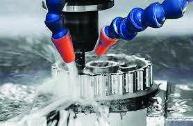

Ferrous & Non-ferrous Metals Casting
Facilities to produce ferrous and non-ferrous castings including cast irons, alloy steels, austenitic cast iron, medium alloy steels, wear and impact resistant steels, copper alloys, bronze, zinc and aluminium. The pattern shop's experienced technicians make complex patterns and moulds as per drawings or samples within close tolerances.

CNC Machining
CNC machining facility for precision machining processes — handling a variety of products for various applications as per customer requirements.
Customer-supplied images — machined components (click to view in gallery):



Conventional Machining
Alongside CNC, facilities for all kinds of machining by conventional methods — for small, heavy and complicated jobs. The machine shop's installed base: lathes, gear hobbing, milling, shapers, vertical turning and boring mills, horizontal boring, slotting and radial drill machines.
Customer-supplied images — turning & milling in process:


Steel Fabrication
Difficult fabrication jobs for construction, marine, oil & gas sectors and all kinds of process industries. Workforce of fitters, certified welders, fabricators, technicians and engineers. Experience in bulk storage tanks, mixing vessels, conveyors, trolleys and trailers supports in-house design and manufacture for lubricant & grease plants, chemical, dairy, beverage and food processing, wastewater and desalination plants.
Customer-supplied image — heavy fabrication work:


Pipe Fabrication
Welding of piping components — pipe, elbows, tees, flanges and more — into engineered piping systems to design requirements or drawings. The manufacturing facility makes pipe spools for hydraulic systems and different types of process skids used in the oil and gas sector.

Plant Shutdown & Onsite Service
Shutdown jobs for process industries including oil, gas, petrochemicals, cement crusher, food & beverage, mining, fertilizer and glass industries. General maintenance and repair plus HVAC systems, compressors, generators, turbines, valves, process piping, tanks and vessels — including dismantling, installation, replacement of heavy equipment and site structural repair. In cement and quarries: roller-press rebuilding, vertical roller-mill repairs, kiln-shell repairs, kiln-shell tyre and crack repair works.

Cooling Tower Maintenance
Maintenance to ensure effectiveness and safety — keeping optimal working temperatures and keeping everyone safe. The three most common problems addressed: corrosion of internal structures, water-quality issues, and mechanical damage of moving parts.

Conveyor & Conveyor Components
Conveyor systems and components as shown in the brochure — including idler frames, pulleys and rollers for bulk-handling and plant applications.

Rotary Valves
Rotary (airlock) valves as shown in the brochure for controlled bulk-material discharge and metering duties.

Process Skid Fabrication
Packaged process skids — including gas trains and pump packages — fabricated as shown in the brochure for oil, gas and process service.

Hydraulic Equipment Manufacture & Servicing
Hydraulic power packs and skid-mounted hydraulic units — manufacture and servicing — as shown in the brochure.